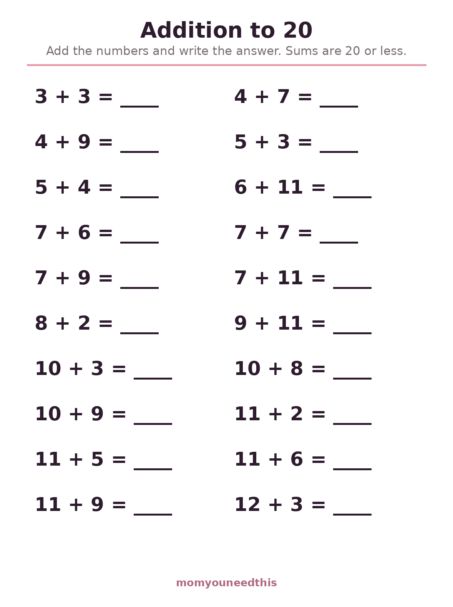
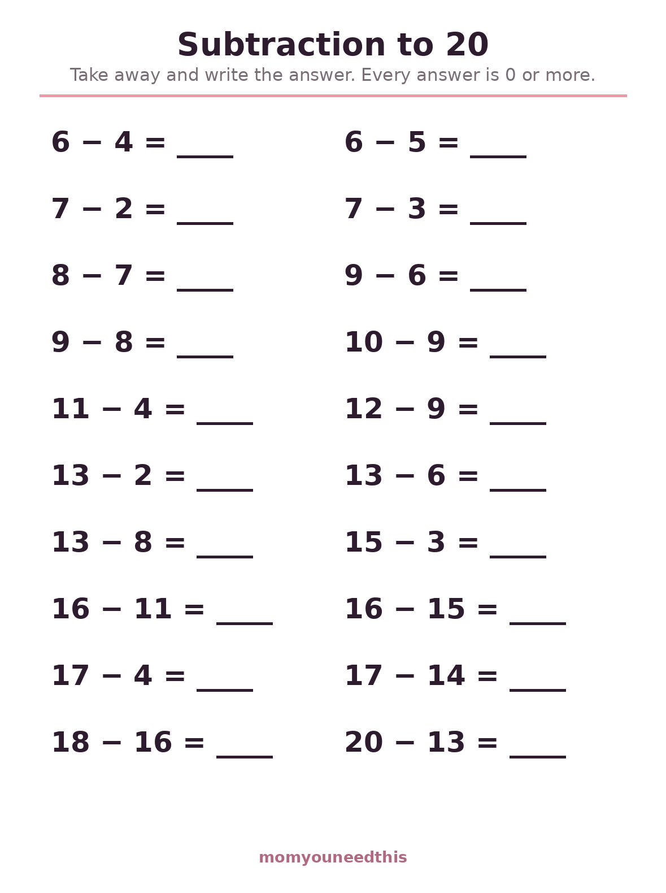
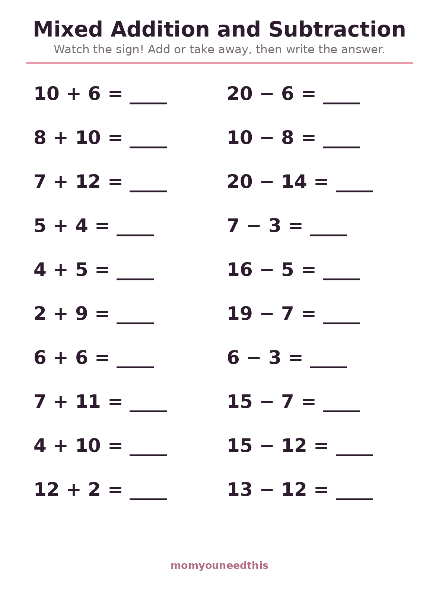
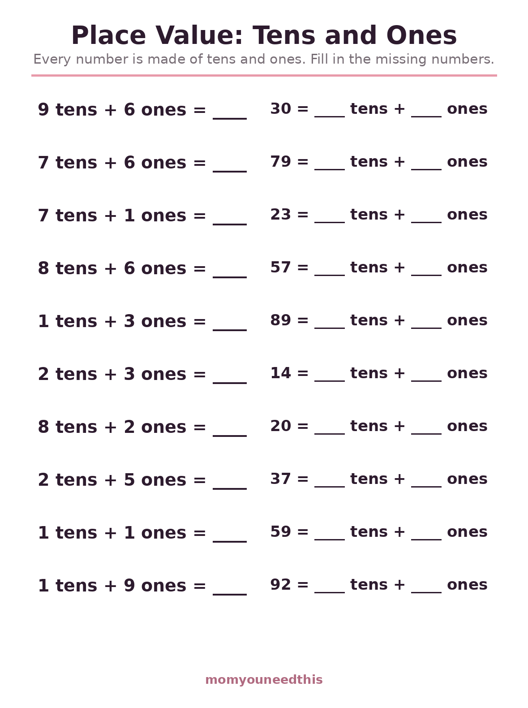
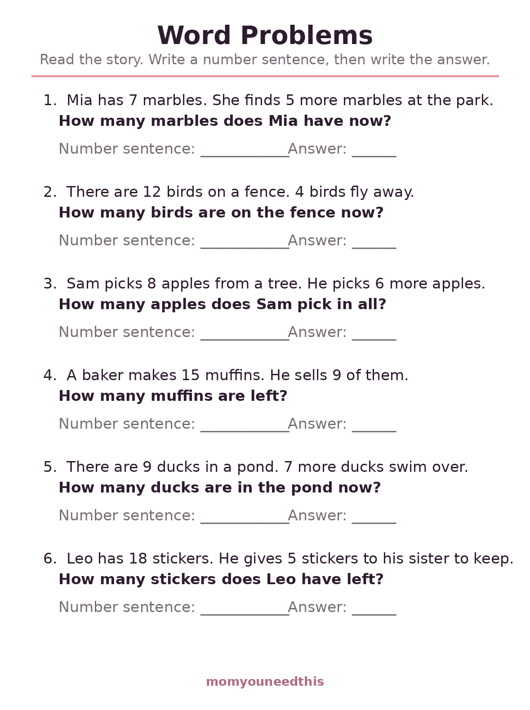

Math Worksheets for 1st Graders First Grade Math Worksheets: Addition & Subtraction to 20, Place Value & Word Problems
These math worksheets for 1st graders cover the heart of the first-grade year: addition and subtraction within 20, a mixed sheet that keeps both skills fresh, place value with tens and ones, and gentle word problems. Each problem sheet holds 20 questions in big, clear type, made for ages 6 to 7. Nothing is timed and no answers are printed. Print at home — free, with no signup.
Last updated: October 21, 2026
Quick Answer
Five free sheets for first-grade math: addition to 20 and subtraction to 20 with 20 problems each, a mixed addition-and-subtraction sheet, a place value sheet on tens and ones, and a word-problem sheet with six one-step stories. Subtraction answers never go below zero. Made for ages 6 to 7, with no answers printed.
At a Glance
- Ages: 6–7 (grade 1)
- What you get: 5 worksheets — addition, subtraction, mixed, place value, word problems
- Problems: 20 per sheet (6 stories on the word-problem sheet)
- Answers: None printed — made to check together
- Cost: Free — no signup, no email
➕ Addition to 20
Twenty addition problems with sums of 20 or less, including the facts first graders meet all year: doubles like 6 + 6, near-doubles, and the bridging facts like 9 + 4 that reward making a ten first. The problems are big and uncluttered, so the only challenge on the page is the math itself. A child who works through this sheet steadily is building exactly the fluency that second grade expects to find.

➕ Download Your Free Addition to 20 Worksheet
20 problems, sums of 20 or less
⬇️ Download Free Worksheet 🖨️ Print🎁 Free printable for ages 6–7
➖ Subtraction to 20
Subtraction is the harder direction for most first graders, so this sheet stays friendly: twenty take-away problems, every starting number 20 or less, and no answer ever below zero. Counting back on fingers or along a number line is a real strategy here, not a crutch — the sheet is built to be finished with whatever tool your child trusts, and to get a little faster week by week.

➖ Download Your Free Subtraction to 20 Worksheet
20 problems, no answer below zero
⬇️ Download Free Worksheet 🖨️ Print🎁 Free printable for ages 6–7
🔀 Mixed Addition & Subtraction
Real math never announces which operation it is using, and neither does this sheet. Twenty problems alternate between addition and subtraction to 20, so your child has to stop, read the sign, and choose — the single most useful habit this page teaches. Expect it to run slower than the single-skill sheets at first. That pause before each problem is not a problem; it is the learning happening.

🔀 Download Your Free Mixed Practice Worksheet
20 problems — watch the sign
⬇️ Download Free Worksheet 🖨️ Print🎁 Free printable for ages 6–7
🔟 Place Value: Tens and Ones
Place value is the idea underneath everything that comes next: 57 is not a 5 and a 7 sitting together, it is 5 tens and 7 ones. Twenty items practice the translation in both directions — 3 tens + 4 ones = ___ and 57 = ___ tens + ___ ones — until taking a two-digit number apart and putting it back together feels like one easy move. This is the sheet that makes carrying make sense later.

🔟 Download Your Free Place Value Worksheet
20 items, tens and ones both ways
⬇️ Download Free Worksheet 🖨️ Print🎁 Free printable for ages 6–7
📖 Word Problems
Six short stories turn number skill into thinking: marbles found at the park, birds leaving a fence, muffins sold at a bakery. Each story asks one clear question and leaves room to write the number sentence before the answer. The contexts are everyday ones — joining groups, taking away, seeing how many are left — and solving them is a first taste of how math describes the real world instead of just filling a page.

📖 Download Your Free Word Problems Worksheet
6 one-step stories with room for the number sentence
⬇️ Download Free Worksheet 🖨️ Print🎁 Free printable for ages 6–7
🖨️ How to Use These Worksheets
- One sheet a day is a full session. Twenty problems is real work for a six-year-old. Little and often builds fluency; a big stack builds resistance.
- Tools are allowed. Counters, a number line, fingers — first graders are meant to use them. The tool your child reaches for tells you how they are thinking.
- Read the sign out loud. On the mixed sheet especially, saying plus or minus before touching the pencil prevents the most common first-grade error: answering the problem they expected instead of the one printed.
- Check together and ask how. A correct answer with a shaky method and a wrong answer with a good method are both useful information. Ask, don't just mark.
📈 Grade Level Is a Guide, Not a Gate
Worksheets are labeled by grade, but children are not, and the label matters less than the fit. If the to-20 sheets still feel big, there is no penalty for dropping back: our kindergarten math worksheets rebuild the to-10 base these sheets stand on, and a confident week there makes this page easier, not later. The reverse is true too — a first grader who flies through all five sheets is telling you they are ready for two-digit work. The path is a staircase, not a schedule, and standing on a step until it feels solid is how the next one gets climbed.
⏱️ Fluency Without the Stopwatch
Nothing on these pages is timed, and that is a choice. Speed with small facts grows out of strategy, not pressure: counting on from the bigger number (start at 9, count 4 more), making a ten (9 + 4 is 10 + 3), and using doubles (6 + 7 is 6 + 6 plus one). A child who owns those three moves will get fast on their own, because every fact becomes a short walk instead of a long count from zero. Racing a timer before the strategies exist teaches guessing; building the strategies first makes the timer unnecessary.
➕ More Math for Moms & Kids
🔢 Kindergarten Math Worksheets
The step before this one: counting to 20, tracing numerals and addition to 10. Start with kindergarten.
➕ Carrying & Borrowing
Two-digit addition and subtraction with regrouping — the next staircase step. Practice carrying.
📖 Math Word Problems
More one-step stories for children who like their math in sentences. Try word problems.
🧒 Older Kids Hub
Every worksheet and practice page for ages 5–8 in one place. Browse Older Kids.
❓ First Grade Math FAQ
What math worksheets for 1st graders are on this page?
Five: addition to 20, subtraction to 20, a mixed addition-and-subtraction sheet, a place value sheet on tens and ones, and a word-problem sheet with six one-step stories. The four problem sheets carry 20 problems each, all with numbers of 20 or less.
How many problems are on each sheet?
Twenty on each of the addition, subtraction, mixed and place value sheets — enough to show which facts are sticking without tiring a six- or seven-year-old out. The word-problem sheet has six stories, each with space to write the number sentence first.
Do the subtraction answers ever go negative?
No. Every subtraction problem starts with a number of 20 or less and takes away a smaller or equal amount, so answers are always zero or more. Negative numbers are a later-grade idea and first graders should never meet one by accident on a practice sheet.
What should my child know before these sheets?
Counting confidently to 20 and adding within 10 are the foundations. If sums past 10 are still new, start with the kindergarten math worksheets to firm up addition to 10, then come back — these sheets reuse those facts inside bigger sums, so nothing learned there is wasted.
Is there an answer key?
No. The numbers are small enough to check together quickly, and reviewing side by side shows you the method, not just the result. A child explaining how they got 13 is learning more in that moment than the problem itself taught.
Are these math worksheets for 1st graders free?
Yes — all five sheets are free to print at home, with no signup, no account and no email. Print fresh copies as often as you like; meeting the same facts on different days is how they become automatic.